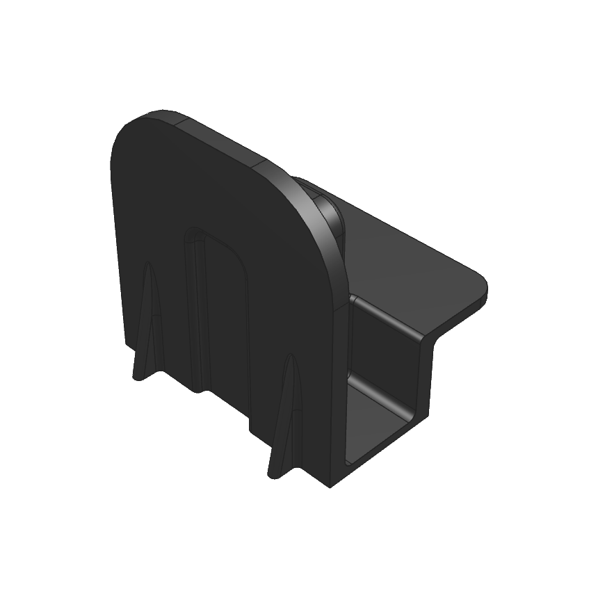
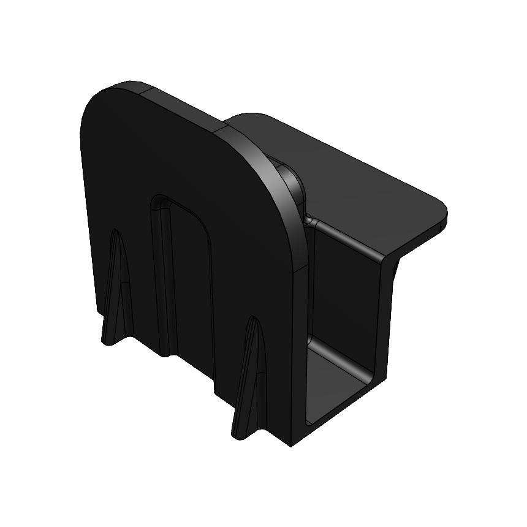
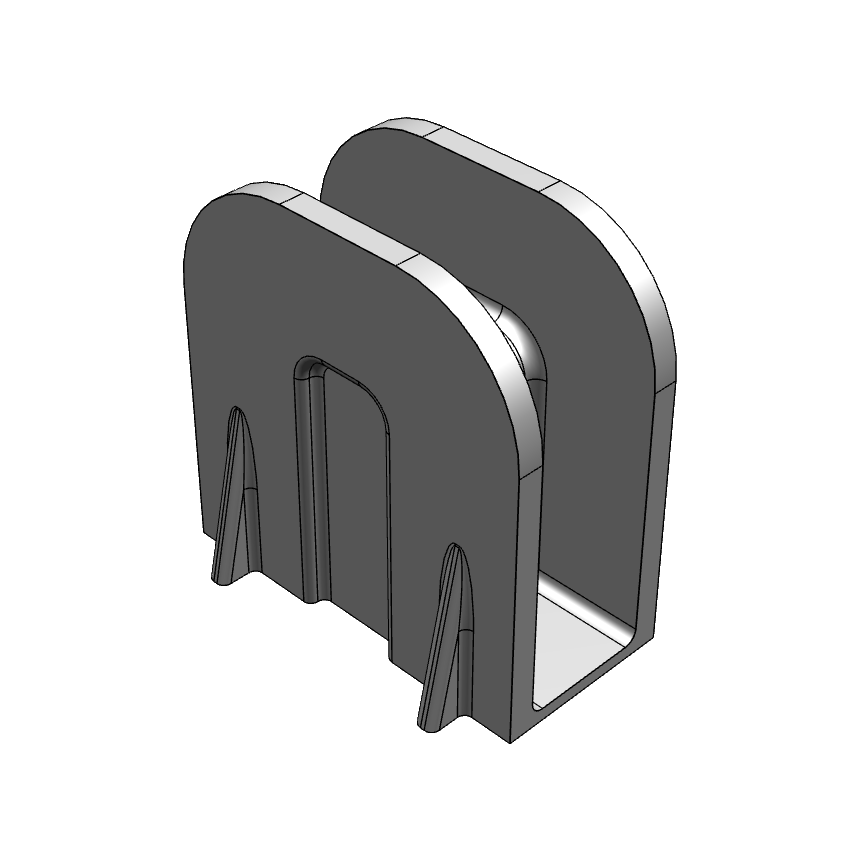
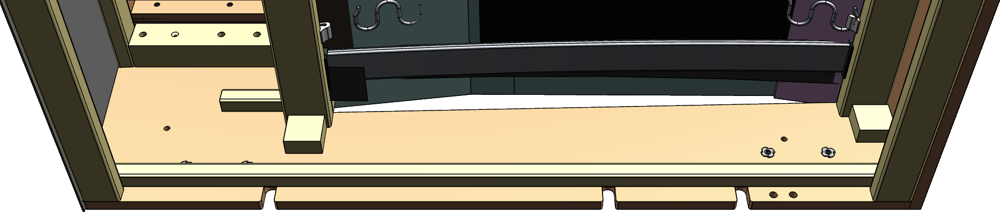
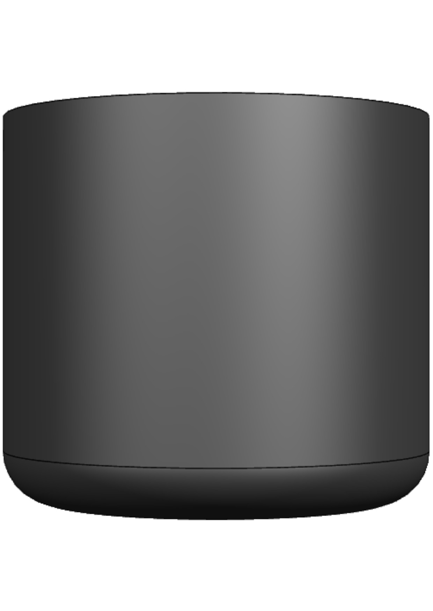
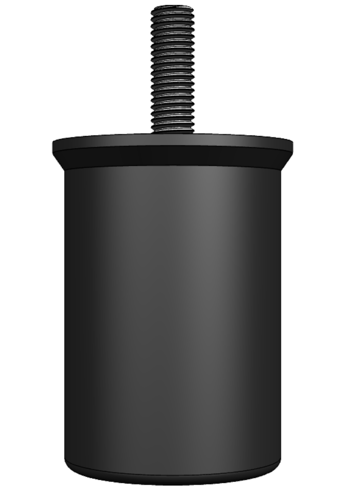
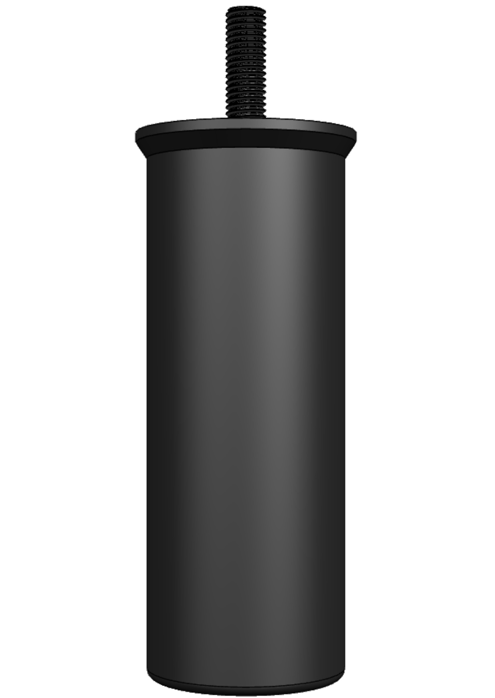
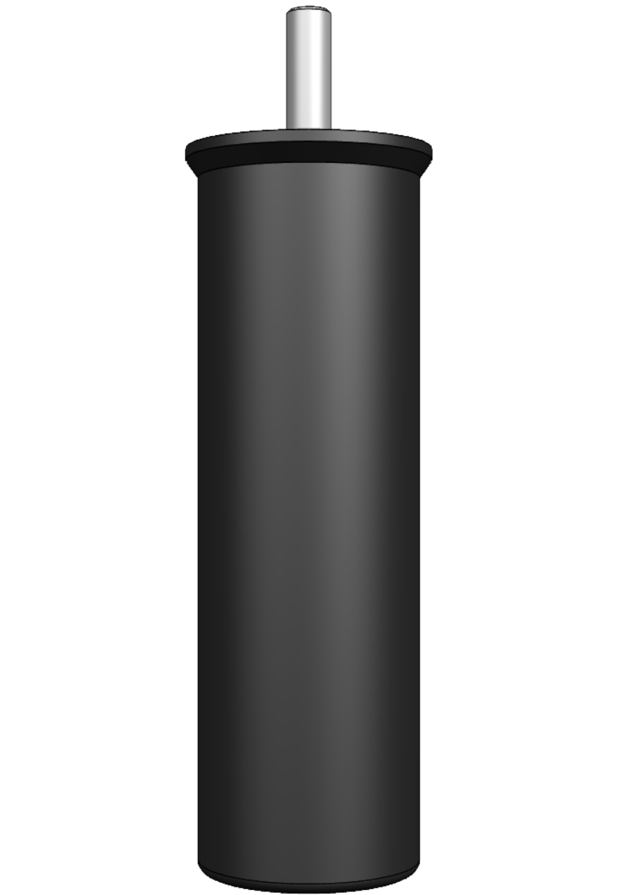

Zacznijmy od zdefiniowania, czym jest układ niestandardowy. Układ niestandardowy to taki, w którym dwa połączone elementy nie mają ani ozdobnych nóżek, ani nóżek podporowych w pobliżu miejsca połączenia. Może się to nie wydawać wielkim problemem, w końcu elementy wiszące na płytkach łączących. Cóż, siła przyciągania Ziemi nie zna litości, dodaj do tego długość dźwigni, a otrzymasz idealne narzędzie do odrywania płytek łączących lub przynajmniej do wydawania nieprzyjemnych dźwięków.
Jak więc możemy to naprawić?
Aby to naprawić, musimy podeprzeć te dwa elementy dokładnie w miejscu połączenia. A do tego mamy odpowiednie narzędzia – adaptery KST i szeroką gamę nóg podporowych.
Adaptery i nogi podporowe. Co, jak i dlaczego?
Przyjrzyjmy się bliżej, jakie adaptery mamy, których i kiedy używać oraz jaką nogę podporową wybrać.



Pierwszy skrajny lewy adapter jest używany, gdy w elemencie zastosowano listwę* o szerokości 15 mm. Środkowy adapter jest używany z listwą o szerokości 23 mm, a skrajny prawy z płytą sklejkową.
*na przykładzie jest to listwa 23x23

Dostępne są cztery główne długości nóg podporowych: 45 mm (nogi Cubano), 60 mm (głównie Paradiso 60 mm), 110 mm (Spin i Vegas) oraz 130 mm (W014 i W018). Wybór nogi zależy od wysokości nóg dekoracyjnych.




Ile nóg powinno być użytych, to pytanie, które prawdopodobnie teraz zaprząta Twoją głowę. Nie martw się, bo oto odpowiedź. Dla pary, a mam na myśli dwa elementy, powiedzmy 2,5EL i 1,5AhoR, powinny być użyte dwie nogi. Ale to nie wszystko, ponieważ nie możemy zamontować nóg w dowolnym miejscu.
Gdzie więc je zamontować?
Na szczęście na to pytanie odpowiada standard dotyczący rozmieszczenia nóg. Tylna noga powinna znajdować się w odległości 15-25 cm od krawędzi, a przednia w odległości 18,5-22,5 cm od krawędzi. Dlaczego istnieje zakres? Cóż, to nie są losowe wartości, to zależy od ZAB (rozstaw pomiędzy listwami klipsowanymi do boków płytowych). Chętnie zagłębiłbym się w ten temat, ale w tym podręczniku jest to zbędne. Pamiętaj tylko, że na bocznych płytach są co najmniej dwa wycięcia na adaptery, a produkcja wie, gdzie je umieścić.
Kiedy i jak wykorzystać całą tę teorię?
Teraz, gdy znasz już podstawową wymaganą teorię, czas porozmawiać o tym, kiedy i jak stosować zdobytą wiedzę. Przede wszystkim należy wyjaśnić, że szukamy niestandardowych układów wśród zleceń produkcyjnych, a tuż po tym, jak planowane zlecenia zostaną przekonwertowane na produkcję. Czy możemy to sprawdzić, póki zamówienia sprzedaży są jeszcze w fazie planowania? Tak, ale to nie ma większego sensu.
Dlaczego w zleceniach produkcyjnych, a zaraz po konwersji?
Ponieważ chcemy zmienić sieć zamówień, dodając nowe części (adaptery i nogi), a to jest możliwe tylko w przypadku zlecenia produkcyjnego. A druga część, dlaczego zaraz po konwersji – ponieważ chcemy to zrobić przed rozpoczęciem produkcji, a nawet przed utworzeniem zleceń zbiorczych, aby na komisyjnych listach pojawiły się wszystkie części, które zamierzamy dodać.